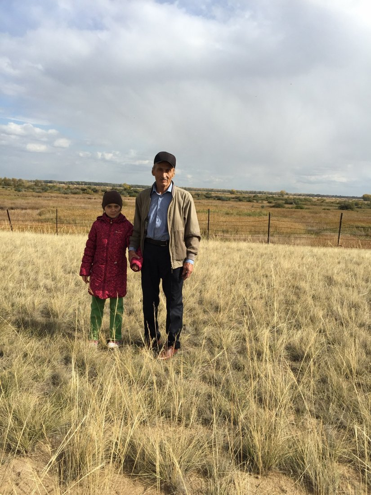
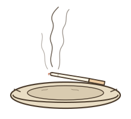
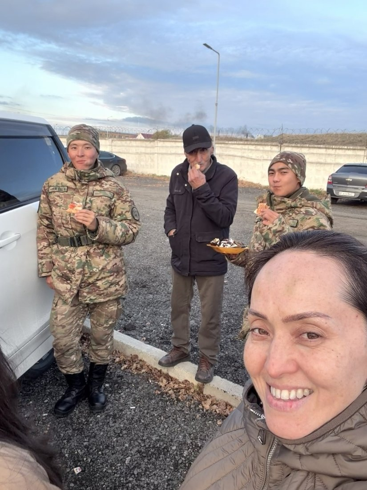

a chapter excerpt from The Wind Girl
☀️ Her Father’s Mornings
Kettle starts to sing,
my father sings back louder,
the morning dances

my father and my daughter, the steppe
One night, far from home, Wind Girl could not sleep. The Wind found her sitting by the window and asked, “Who taught you that love could be joyful?”
She did not have to think.
“My father,” she said. “In the mornings.”
In the family house, the mornings belonged to him. While the house was still blue with early light and the kettle began to hum on the chimney stove that warmed the whole house, he would start to sing his Kazakh songs, softly at first, and then louder, until the whole house was awake whether it wanted to be or not.
he never sang standing still

And he never sang standing still. That was the thing she remembered most. A song came into him and his body had to answer it. He danced the way a candle flame moves: not for anyone watching, simply because it is alive.

Among all his Kazakh songs, there was one Russian song he loved most of all, «Дым сигарет с ментолом». Whenever it played, his eyes would close halfway and he would sway as if the smoke in the song were rising around him, cool and silver, curling toward the ceiling. Wind Girl, small and barefoot, would stand in the doorway and laugh, and he would hold out his hand, and then they would both be dancing.
🤍 Әке махаббаты — ешқандай шартты талап етпейтін, уақытпен өлшенбейтін ең ұлы сезім ✨
Бала кезде бізді қанаттыға қақтырмай, тұмсықтыға шоқыттырмай өсірген әкеміз, есейіп, өз бетімізше өмір сүре бастасақ та, әлі күнге дейін біз үшін алаңдап тұрады. Біз қанша жасқа келсек те, ол кісі үшін баяғы ерке баламыз болып қала береміз.
Кейде ақыл айтса ренжіп, өз білгенімізді істегіміз келеді. Бірақ әкенің жүрегі бізді кез келген қателігімізбен, кез келген жетістігімізбен сол қалпымызда қабылдайды. Оның қамқорлығы мен мейірімі — өмірдің кез келген дауылынан қорғайтын ең сенімді қорған.
Әкелеріміз аман болсын! ❤️

the mornings belonged to him
“He craved it,” she told the Wind. “Not money, not praise. Just the joy of being. Of waking up to a brand new morning, and bringing joy to his family.”
“Then that is where your spring comes from,” said the Wind. “Water does not appear from nowhere. Someone filled the ground long before you knew it was there.”
Wind Girl was quiet. She thought of all the mornings in the year she had just lived through, the mornings she woke beside a man who counted, who measured, who laughed at her fear. She had almost forgotten that a morning could sound like her father’s.
“I want my mornings back,” she said.
“Then sing,” said the Wind. “And dance.”
🎵 his song: «Дым сигарет с ментолом»

me and my father, summer
a call with family

bringing joy to his family
if this touched you, leave a heart 🤍
tap as many times as you like
thank you, your note reached me 🤍